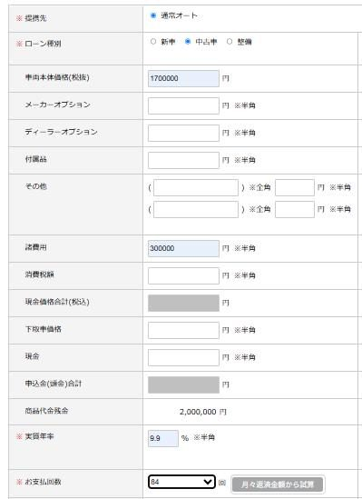
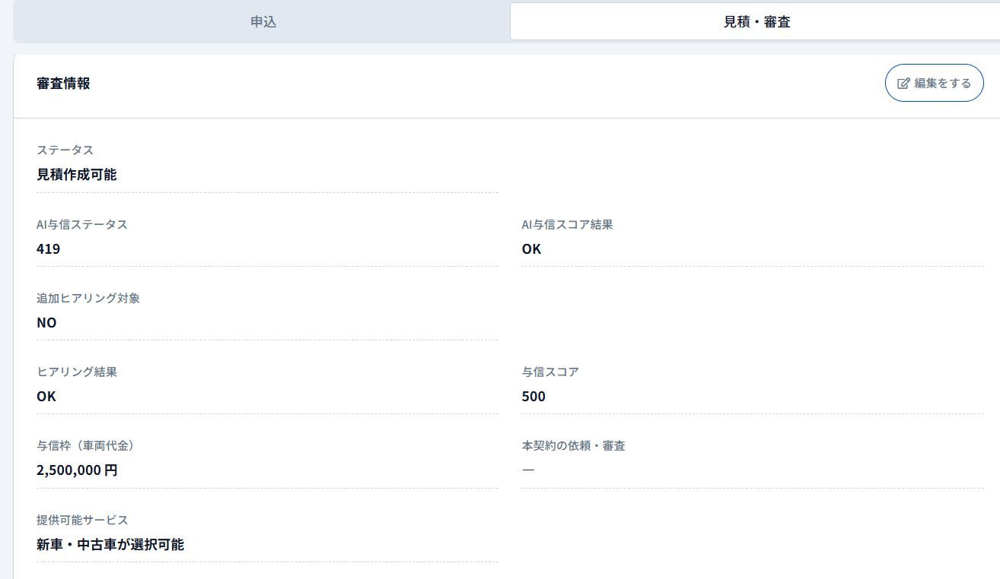
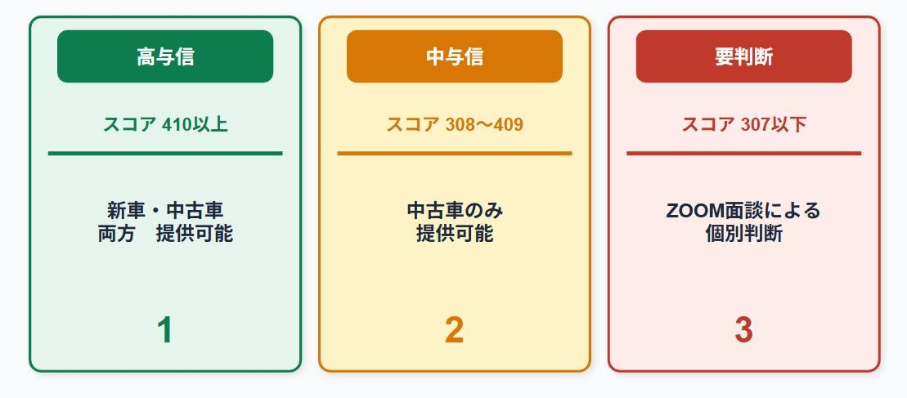
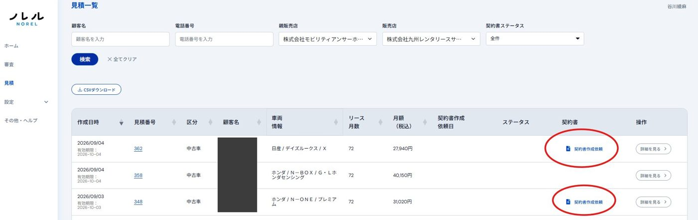

単元9
審査のかけ方と金額設定
この単元のゴール案
各社の審査を正しくかけられる
含む内容：各社の審査のかけ方、金額設定、ICTの詳細
3-4各社の審査のかけ方
- 3-4-1
プレミア（モビリティ）
- 名乗り：契約名義がモビリティなので、プレミアには「モビリティアンサーホールディングス」と名乗る（お客様への名乗りは媒体名）
- 条件：18歳以上・完済時75歳未満。障害年金のみは不可（老齢・厚生年金なら可）。免許証に刺青が写っている方は本審査NG。20歳未満は「金利込み200万円まで」の条件が付きやすい
- 手順：ログイン →「クレジット」→「新規クレジット申込」→ お客様名・販売担当者名、「通常分割払」→「通常オート」「中古車」（画面が更新されるので1つずつ）→ 金額入力 → 試算条件確認 → 車両情報は※の必須項目だけ → 「店頭にてお申込を継続される場合」→ 同意画面で「販売店さまに代理入力を依頼」に必ずチェック → お客様情報は※の項目だけ（携帯電話は必須）→「審査申込」→「申込書ダウンロードと審査申込を行う」→「自動審査を行う」 図3-E 図3-F 図3-G
- 仮審査は添付書類なしで可。外国籍の方は免許証表裏＋在留カード表裏を添付
- 名前は免許証と同じ漢字にする（髙・高、﨑・崎など）。走行距離・居住年数は繰り上げる（2.3万km→3万km）
- 申込の選択は「審査申込」。本申込にしない
- 自動可決はほとんどない。「審査中」なら翌日12時以降に反映（信販会社からの連絡待ち）。結果は「単独可決」「シフト可決」「お見送り」
- シフト可決の条件：金利13.9%、300万円まで

図3-Eプレミア：金額の入力画面 
図3-Fプレミア：「店頭にてお申込を継続される場合」を選ぶ 
図3-Gプレミア：同意画面で「販売店さまに代理入力を依頼」に必ずチェック - 3-4-2
USS（収入証明がある方だけ、プレミアと同時に）
- 名乗り：九州レンタ契約のため「九州レンタリースサービス」
- 条件：20歳以上・完済時65歳未満（18〜19歳は保証人必須）、年金のみは不可、国産車のみ、最大84回（年式で制限）。他店で申込中だとエラーで申し込めない
- 必要書類：免許証表裏＋直近1か月の給与明細（個人事業主は前年の確定申告書。受付日時の記載か受信通知が必要）。源泉徴収票は不可
- 審査前に共有の重複チェックシート（USSシート）に入力する。名前が赤くなればグループ内で審査歴あり
- 手順：ログイン →「申込管理」→「＋新規審査申込」→「個人」、保証人あり・なし → 免許証番号 →「このまま加盟店ページで入力」→ 赤い必須項目をすべて入力（勤務先は必ず「本社」の住所・電話番号）→ 車両情報は MCCS＝あり、リモートスターター＝なし、役務＝なし → 「本人確認の方法」で入力・添付 →「申し込む」 図3-H 図3-I
- 少しの違いでも不備で返却される。減額可決がよく出るので、可決金額は回答どおりに記録する。結果は「120以上可決」「120未満可決」
- MCCSの費用88,000円がかかる

図3-HUSS：新規審査申込の最初の画面（個人・保証人・免許証番号） 
図3-IUSS：MCCS情報の入力（MCCS＝あり、リモートスターター＝なし など） - 3-4-3
リローン（プレミア・USSが否決なら翌日）
- 条件：18歳以上65歳未満、年金のみは不可、障碍者は審査しない、外国籍は永住権必須、自動車に関わる仕事（ディーラー・ガソスタ・鈑金・整備・レンタカー等）はNG
- 期間：3・4・6・7年のうち、原則6年か7年。残価は総支払額の10〜13%
- 手順
- 重複チェックシートにフルネーム（姓名の間にスペースなし）を入れる。赤くなり同一人物ならグループ内で審査済みのため不可（1か月以上たっていれば可） 図3-J
- リローン見積フォーマット（現行2606）のファイル名をお客様名に変える
- リース見積りシート：担当者、希望納車日（審査日から1〜1.5か月後）、状態＝中古車、型式、①商談価格＝販売価格−20万円、②リース斡旋手数料＝20万円（固定）、頭金0、リース期間を7年にしてから残価設定、自動車税は7年分 図3-K
- 入力シート：英数字は半角・他は全角。融資希望額＝総支払額の1万の位を＋1万。世帯年収が個人年収を下回らないようにする。備考に新規・乗換・増車と、購入理由・審査不安のネガ/ポジ要素を50文字以内
- L列：希望回数84、希望分割金額＝月額リース料の1万の位を＋1万、家賃
- 営業事務のPCからメール送信。件名「仮審査 【お客様名】（店舗名）【担当者】」、本文なし、CCなし、添付はExcelと免許証表裏（jpeg）。zipはNG 図3-L
- 提出前チェック（「いいえ」が1つでもあれば止める）：レクサス・2ドアスポーツでない／15年未満／年収を超える販売価格でない／自動車税が正しい／残価10〜13%／6年か7年／年収200万円超／18〜64歳／免許証番号の一番右の桁が3未満／免許証の有効期限が1か月以上ある／自動車関係の職業でない／障碍者でない／外国籍は永住権あり／誤字・未入力なし

図3-Jリローン：重複チェックシステム 
図3-Kリローン：リース見積フォーマット 
図3-Lリローン：仮審査メールの例（件名・添付） - 3-4-4
モデルクレジット
- お申込与信審査依頼書を手書きし、見積書・免許証の表裏などをFAXか指定のLINEグループに送る
- 3-4-5
ICT（ノレル）（リローンも否決なら）
- ガリバーの子会社ICTのリース商品「ノレル」。AIの独自基準
- 手順：お客様にICTの案内文を送る（希望されたら「リース希望」と返信が来る）→ かんたん審査フォームを入力（見積番号は空欄、担当者名・連絡先は自分）→ 免許証番号（12桁）→ 同意 →「審査申込する」→ ノレルの管理システムで「詳細」から「電話連絡許可」をOKにして「更新する」 図3-M
- 居住年数・勤続年数の「か月」は切り上げ（5年1か月→6年）。デビット・プリペイド、10万円未満の枠のカードは「持っていない」。派遣社員は派遣元の会社で入力し、出向・派遣「有」
- お客様にSMSが届き、規約に同意するとICTから電話が入る（11〜19時）。事前に伝えておく
- ステータス：審査規約同意待ち／ヒアリング待ち／ヒアリングNG／見積作成可能（＝可決）。与信枠（車両代金）も「見積作成可能」の画面で確認する 図3-P
- 否決のときは「提供可能サービス」が「サービス提供不可」になる 図3-Q
- 見積書の審査で「否認」になり「上限総額〇万円まで」「最終審査でZOOM面談が必要」と出たら、その金額に合わせて車を選び直し、ZOOM面談の案内をする 図3-R

図3-MICT：かんたん審査フォーム 
図3-PICT：ステータスが「見積作成可能」になれば可決。与信枠もここで確認 
図3-QICT：否決のときの表示（サービス提供不可） 図3-RICT：見積書の審査で「否認」になった例
3-6審査時の金額設定
- 3-6-1
プレミア：車両本体価格（税抜）＝業販価格×1.1＋115万円−26万円、付属品8万円、諸費用18万円、実質年率13.9%、72回（8課の運用）
- 3-6-2
USS：MCCSなしは金利7.5%、MCCSありは13.9%。最大84回、年式で回数制限あり。仮審査の固定値は付属品10万円、諸費用（軽15万・普通車10万）、車検・整備費用（軽10万・普通車15万）
- 3-6-3
リローン：総支払額の10〜13%を残価に設定し、自動車税を組み込む。販売価格がお客様の年収を超えないようにする
- 3-6-4
モデルクレジット：車両総額50万〜300万円
- 3-6-5
ICT：お客様ごとの与信枠（車両代金）が支払総額の上限。中古車は6年（72か月）、新車は7年（84か月）のリース
3-8ICTの詳細（ICT社資料より）
- 3-8-1
スコア410以上：新車・中古車とも可。409〜308：中古車のみ。307以下：ZOOM面談で個別判断 図3-N

図3-NICT：AI与信スコアで案内できる車が変わる - 3-8-2
利用できない方：20歳未満・68歳以上、定住権・永住権がない方（在留期間中の契約なら可）、債務整理予定・手続き中、自治体の承諾書がない生活保護受給者、反社会的勢力、犯罪歴、ICTで未払い歴のある方 図3-O

図3-OICT：案内できない方の条件 - 3-8-3
契約できないもの：法人契約、業務用ナンバー（黒・緑）、輸入車
- 3-8-4
AA仕入れ：評価点3.5以上。ワンプライスに限らずセリも可。本審査可決後、ICTの許可が降りてから落札する。納車前キャンセル時のAA仕入れ負担は販売店
- 3-8-5
見積：市場相場と大きく違う価格は否認。諸費用はシステム上25万円まで。見積時に出品表・AIS評価書と見積書を提出する
- 3-8-6
契約書作成依頼のボタンを必ず押す（見積審査・本審査のきっかけになる） 図3-S

図3-SICT：案件一覧（契約書作成依頼のボタン） - 3-8-7
申込金：リース料2か月分を契約書発行から14日以内に振込
- 3-8-8
初回引き落とし：登録日の翌々月5日（例：1月10日登録→3月5日）。契約後のキャンセル不可、中途解約も原則不可、GPS取付
- 3-8-9
納車まで：署名・押印済み契約書、引落口座の登録、申込金の支払いの3点が完了したら納車手続きへ
- 3-8-10
納車後：名義変更後に車検証・自賠責・リサイクル券を共有し、物件受領証と任意保険証券（車両保険必須）を提出する。月末集計で翌月20日に支払い（10章）
教育担当者のチェック
押すと印が付きます。この端末のブラウザにだけ保存されます。正式な記録は印刷したチェックリストに書いてください。